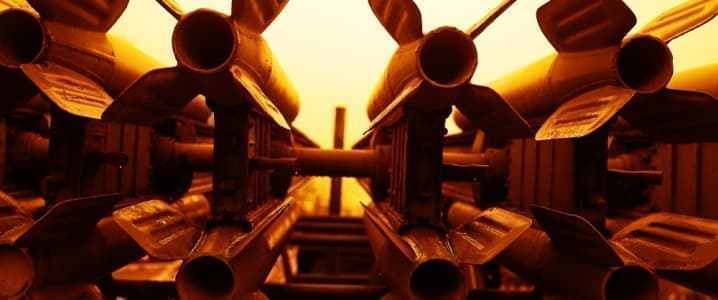

China's Nuclear Weapon Expansion: A Threat to Global Security?
Image Credits https://oilprice.com/Geopolitics/International/China-At-The-Forefront-Of-Nuclear-Weapon-Expansion.html
China's nuclear weapon expansion has been a growing concern for the international community. According to the Stockholm International Peace Research Institute (SIPRI), China has added an estimated 60 nuclear weapons to its stockpile between January 2022 and 2023, with predictions of continued growth in the next decade. This is despite Russia and the United States still holding the majority of global nuclear warheads.
On October 16, 1964, China successfully detonated its first atomic bomb, becoming the world's fifth nuclear-armed power. Since then, China has been steadily building its nuclear arsenal, focusing on both quantitative and qualitative improvements. In recent years, China has been investing in advanced technologies such as hypersonic gliders, which can bypass missile defense systems. These advancements have raised concerns among other nuclear-armed powers, particularly the US and Russia, about the impact of China's expansion on global security.
Case Studies
1. The US-China Nuclear Standoff
The US and China have been engaged in a nuclear standoff for years. In recent years, tensions have escalated due to China's nuclear expansion. The US has accused China of increasing production of nuclear warheads, while China has accused the US of deploying more advanced missile defense systems in the region. The tension between the two nuclear-armed powers has raised concerns about the possibility of a nuclear conflict, which could have catastrophic consequences for the entire world.
2. India's Nuclear Deterrence Strategy
China's nuclear expansion has also impacted India's nuclear deterrence strategy. India, which has been in a long-standing territorial dispute with China, has been investing heavily in its nuclear capabilities. India's nuclear weapons program is focused on deterrence against China, which it sees as a major threat. However, China's nuclear expansion has raised concerns about the effectiveness of India's nuclear deterrence strategy, as China's growing nuclear arsenal could potentially overwhelm India's defenses.
Conclusion
The growing nuclear arsenal of China is a cause of concern for the international community. China's nuclear expansion has raised tensions with other nuclear-armed powers and has had an impact on global security. It is crucial that China engages in meaningful dialogue with other nuclear-armed powers to reduce tensions and avoid a nuclear conflict. As China's nuclear capabilities continue to grow, it is essential that the international community plays an active role in ensuring global security and peace.
Curated by Team Akash.Mittal.Blog
Share on Twitter Share on LinkedIn